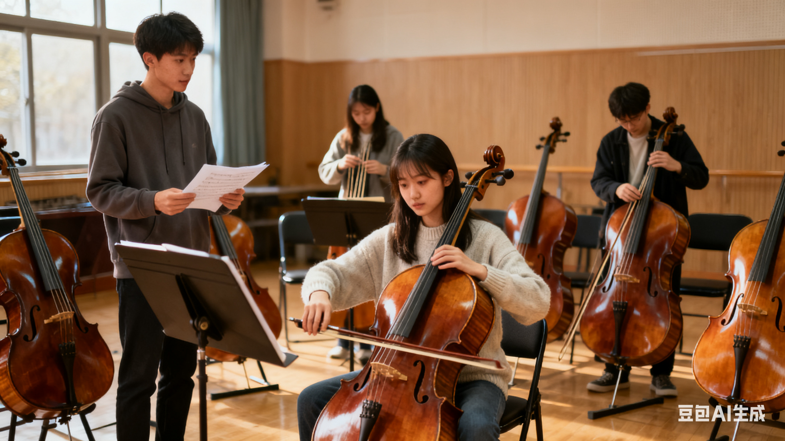

大提琴社团是一个专注于大提琴演奏、交流与推广的音乐社团，致力于为热爱大提琴的同学们提供一个学习、展示与成长的平台。无论你是初学者，还是已有一定基础的演奏者，只要你对大提琴充满热情，我们都欢迎你的加入。社团秉持“以乐会友、以琴传情”的宗旨，鼓励成员们在轻松愉快的氛围中提升技艺、拓展视野、结交朋友，共同感受音乐的魅力与大提琴独特的音色之美。 大提琴，作为弦乐家族的重要成员，以其深沉、温暖、富有表现力的音色，被誉为“最接近人声的乐器”。它既能演奏旋律，又能承担和声与低音声部，在独奏、重奏、协奏乃至交响乐中都占据着不可替代的地位。大提琴社团正是围绕这一优雅而富有情感的乐器展开活动，通过系统的训练、丰富的演出机会以及多样的交流形式，帮助成员们更好地理解音乐、表达情感、提升艺术修养。 社团的主要活动内容包括：定期的集体排练、分组练习、大师班讲座、校内外演出、与其他乐器社团的联合交流、以及参与各类音乐比赛和艺术节。我们特别注重基础训练与音乐表现力的结合，针对不同水平的成员制定相应的学习计划。对于初学者，社团提供入门指导，包括正确的持琴姿势、运弓技巧、音准训练等；对于有一定基础的成员，则通过乐曲演奏、技巧提升、合奏训练等方式，进一步提高其演奏水平和音乐理解力。 此外，社团还积极营造浓厚的艺术氛围，定期组织观摩音乐会、电影音乐赏析、乐器知识讲座等活动，拓宽成员的音乐视野，增强对音乐文化的理解。我们相信，音乐不仅仅是技巧的展现，更是情感的表达与心灵的沟通。通过参与社团活动，成员们不仅能够提升演奏能力，更能在音乐中找到自我、释放情感、建立自信。 社团内部氛围和谐融洽，成员之间互帮互助、共同进步。无论是排练中的默契配合，还是演出时的相互鼓励，大家都像一个大家庭一样团结友爱。社团也设有干部团队，负责组织、策划、宣传、后勤等各项工作，为社团的良性运作提供保障。我们鼓励每一位成员积极参与社团事务，在实践中锻炼组织能力、沟通能力和团队协作精神。 每年，社团都会参与校内外多场演出活动，如迎新晚会、校园艺术节、社团文化节、公益演出、音乐厅专场音乐会等。这些演出不仅是成员们展示自我的舞台，更是积累舞台经验、提升演奏自信的重要机会。我们还曾多次与其他乐器社团合作，举办弦乐重奏音乐会、室内乐交流演出等，促进不同乐器之间的融合与互动，丰富音乐表现力。 社团也积极与外界专业音乐资源接轨，不定期邀请专业大提琴演奏家、音乐学院教授、知名乐团演奏员等来校开展大师班、讲座、个别指导等活动，为成员们提供更专业的学习机会。通过这些高水平的交流活动，成员们能够接触到更广阔的音乐世界，激发学习热情，明确努力方向。 大提琴社团不仅是一个学习音乐的地方，更是一个充满温暖与激情的大家庭。在这里，你可以找到志同道合的朋友，收获音乐带来的快乐与感动；在这里，你可以挑战自我、突破极限，感受到成长的喜悦；在这里，你可以用琴声讲述自己的故事，表达内心的情感，与世界对话。
为了让大家更好地了解大提琴社的日常，本学期计划安排如下几项主要活动。 具体时间可能会根据学校统一安排略作调整，详情请关注社团通知。
| 大提琴社 2025 年春季学期活动安排表 | |||
|---|---|---|---|
| 活动名称 | 活动时间 | 活动地点 | 负责人 |
| 新成员见面会 | 3 月第 2 周 周五晚 | 学生活动中心 音乐教室 201 | 张强 |
| 吉他基础教学公开课 | 3 月第 3 周 周六下午 | 李娜 | |
| 校园草地弹唱会 | 4 月第 2 周 周日 | 操场东侧草坪 | 王浩 |
| 期末专场音乐会 | 6 月第 1 周 周六晚 | 大学生活动中心 大礼堂 | 刘芳 |
下面是一张往届校园音乐会的照片示意。点击图片，可以查看更详细的活动介绍页面。 在实际使用中，请根据自己的图片文件名进行修改。
刘子玄，材料学院2021级，入学第一天拿着父亲给的1980年代工厂琴，连节奏型都认不全。第一次排练，他把《欢乐颂》拉成“悲伤颂”，指挥棒差点被他逼成“拐杖”。 “那就从空弦开始。”技术部长刘雨桐把他摁在琴房，每天18:30-19:00只拉开弓，录音必须达到“尺子量”——波形图呈漂亮橄榄形。30天后，他的A弦空弦从“锯齿”变成“丝绸”，再进入《铃木大提琴》第4册，节奏感测评由D跃至A。 大二寒假，他背着琴盒独自坐绿皮火车去成都，参加省级弦乐邀请赛。决赛曲目是《博凯里尼降B大调奏鸣曲》，因航班延误，他赛前仅睡3小时，却靠“空弦冥想”稳住心跳，最终以0.12分优势夺银。颁奖礼上，他把奖牌挂在琴轴上拍照发给父亲：“老伙计，你三十七岁的琴，今天赢了全省。” 如今，刘子玄是社团“节奏急救员”，每周三给新人上“空弦急诊”，他说：“低音不是背景，是心跳，先稳，再谈感情。”
陈以舟，物理系2019级，绩点3.9，却在大二遭遇科研瓶颈，连续两次实验失败，被诊断为轻度抑郁。辅导员建议他“找个出口”，他瞄上了社团“零门槛体验课”。 第一次拉琴，他手指僵直，却把《G大调前奏曲》拉成“心电图”，结束后他趴在琴盒上哭了40分钟：“原来我还可以发出美的声音。” 此后，他把实验室的“失败数据”贴满琴房，拉琴前先看5分钟“错误曲线”，再闭眼拉《无伴奏组曲》，用肌肉记忆告诉自己“错音也能走向解决”。 大三，他带领“科研琴霸”小队（4名理工生）参加全国大学生艺术展演，以《巴赫赋格的艺术》弦乐四重奏版摘一等奖。他把奖状贴在实验室门口：“科研尚未成功，低音仍在发光。” 毕业那天，他把自己的琴弓送给师弟，附一张纸条：“当数据虐你千百遍，请把弓毛松一松，再拉一个A-440，世界会回来。”
请认真填写以下信息，确保联系方式准确无误。 提交后，社团会通过电话或短信的方式通知面谈或试音时间。
提交表单后，如需修改信息，可以再次填写并提交最新的一份。